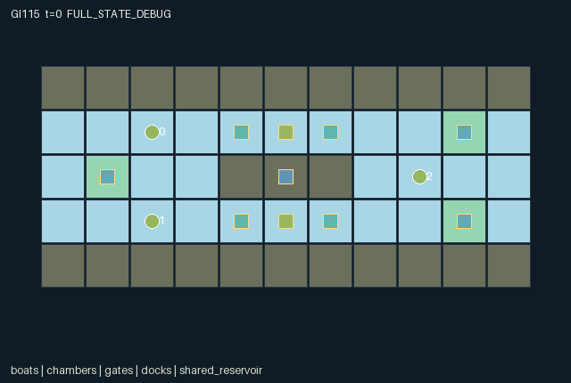

GI115 / SPATIAL
共享水源船闸
两座船闸共用守恒的有限水量，注水、排水和互相转移影响船只跨越水位。
Original saved demonstration
Recorded native state, often authored scripts or interventions; information scope and failures are preserved in the original provenance. This is a saved demonstration, not live browser play.

Release verification episode
Untrained uniform legal actions. Actual JAX state sampled along the full original episode; full-state debug camera. No human performance or learning claim.

Run this game
crucibles play --game 115
Start Python locally, then open the address printed by the terminal. Installation, multiplayer, takeover and keyboard controls →
Objective, rewards & ending
Exact task contract
{
"objective": "Deliver each boat cargo to its indexed dock using either lock lane and the two shared transferable water units.",
"natural_termination": "All three boats delivered; otherwise truncate at tick 128, with natural completion taking priority on that tick.",
"interaction": "A chamber may be opened at the low bank only at level zero and at the high bank only at level two. Filling or transferring water changes what the other chamber can do. Boats physically occupy cells, may form convoys and may need to yield an entrance to allow opposing traffic.",
"observation_access": "All map, boat, gate, chamber, reservoir and dock state is public. The flat row adds the acting boat identity. No private targets or unobserved resource fields are used.",
"transition_order": "Movement uses old gate states and rotating occupancy priority. Each chamber then selects one nearby boat command by the same rotating boat priority. Chambers settle their commands in alternating lane order, followed by delivery and termination."
}Declared per-step reward bounds: -1.0 to 10.0. Observability: fully_observable.
Rules
- Left basin is low and right basin is high. Each lock chamber has a low gate, a high gate and a level from zero to two.
- Only two water units exist across both chambers and the shared reservoir. Filling, draining and inter-chamber transfer conserve their sum.
- A boat may command a lane while at x=3 through 7 on its lock row, including the chamber and gate approaches.
- One command wins per lane by rotating boat priority; lane processing order alternates to settle shared-reservoir conflicts.
- Closed gates permit pumping. A low gate opens only at level zero; a high gate opens only at level two.
- Boats occupy cells. The rotating move order permits following an already vacated cell but blocks occupied destinations and direct swaps.
- Each own delivery gives six reward units and each team delivery gives every boat one; waiting and pump attempts incur costs.
- No executed convoy, numerical conservation trace or learning result is claimed by this author package.
Original mechanism document (historical status wording retained)
# Freight canal locks and shared water
Status: **AUTHORED_NOT_EXECUTED**. Candidate `game-v3-00115`, source attempt 0, source split train, final test unused.
## Spatial rules and cross-agent dependence
Three freight boats navigate two basins joined by two three-cell lock chambers. The western basin is at reference level zero and the eastern basin at reference level two. Each chamber has an actual low gate at x=4 and high gate at x=6 on its row, y=1 or y=3. Boats cross only open gates. The goals are indexed physical docks: (9,1), (9,3) and (1,2). A completed boat unloads, becomes inactive and ceases to occupy traffic space.
There are exactly two modelled service-water units shared across both chambers and the central reservoir. A closed chamber can be filled by one reservoir unit, drained by one unit back to the reservoir, or transfer one unit directly to the other closed chamber. Every operation subtracts where it adds. Opening a low gate requires chamber level zero; opening a high gate requires level two; opposite gates cannot be open simultaneously. Filling one chamber to the high side uses all two units and prevents the other chamber from independently reaching high until water is returned or transferred. Basins have fixed reference elevations; this is a discrete lock service-water model, not an assertion of realistic full fluid conservation.
A boat may command the lane at x=3 through 7 on that lane's row. It can therefore operate from an approach or inside the chamber. Commands are joint, but one command per lane is selected by rotating boat priority. The lanes then settle in alternating order, which makes simultaneous claims on the last reservoir unit deterministic and explicit. Movement also uses rotating priority against the current occupied cells: a boat may follow a cell vacated earlier in that transition but may not enter a currently occupied cell. Opposing boats have to yield enough approach space; direct swaps do not pass through each other.
A boat earns six units for its own delivery and one unit for every completed delivery. Every still-active boat pays 0.02 per tick; a selected pump, drain or transfer attempt costs its issuer 0.03 even if a prerequisite prevents flow. These mixed incentives permit mutually helpful operations but also give a boat a reason to prefer its own passage, avoid paying a partner's operation cost or occupy an approach. The source does not assume that reward sharing creates cooperation.
## Partner-dependent strategies and limits
A same-direction convoy can enter one chamber, share a fill and pass the high gate. An opposing boat can yield the high entrance, then reuse the high chamber and drain for its westbound trip. Alternatively, two lanes can alternate by transferring water directly between closed chambers, avoiding a return through the reservoir but still requiring appropriate gate closure and access. Filling both chambers once leaves each at an intermediate level and the reservoir empty; resolving that state needs a drain or transfer and an agreed lane order. A boat blocking an exit can make an otherwise correctly filled lock unusable.
The finite script proposes a two-boat eastbound convoy followed by one westbound return through the upper chamber. Its thirty-one commands are source-derived intentions, not a run receipt. The paired resource test instead uses a shorter fixed prefix to place two boats at separate controls and close both low gates. Branch A fills the upper lane twice before the lower boat asks for water; branch B waits on the upper lane. The later lower command is identical. Compare actual level and stock arrays, gate-opening opportunity and subsequent positions. There need not be any immediate delivery reward difference, and water hoarding can be individually useful or jointly wasteful.
All game information is public. Chamber bars, gate flags, boat cargo, reservoir quantity, net flow and the current priority are represented in the flat observation. Net flow is a per-transition signed difference, so cancelling transfers can produce zero even if internal commands were attempted; it is not a total pumping meter. Dynamic entity positions and gate states are renderer bindings, not invented transitions.
Different chamber capacity, reservoir stock, goal directions, lane lengths or operation costs could alter convoy and yielding strategies. Such variants are future hypotheses, not implemented randomized regimes or measured generalization. Actual invariant, timing, replay and strategic checks remain required.
## Literal source evidence
- Real gate crossing constraints: `candidate.py:64` contains `pass_gate = (~low_cross | s['gate_open'][2 * lock_index]) & (~high_cross | s['gate_open'][2 * lock_index + 1])`.
- Physical occupancy arbitration: `candidate.py:69` contains `occupied = jnp.any(n['boat_active'] & (jnp.arange(3) != i) & jnp.all(n['boat_pos'] == target[i], axis=1))`.
- Nearby lane control: `candidate.py:72` contains `operating = (n['boat_pos'][:, 0] >= 3) & (n['boat_pos'][:, 0] <= 7) & (`.
- Rotating command selection: `candidate.py:80` contains `winner = jnp.argmin(jnp.where(eligible, rank, 9)).astype(jnp.int32)`.
- Shared water prerequisite: `candidate.py:91` contains `fill = (cmd == 8) & closed & (n['level'][k] < 2) & (n['stock'][0] > 0)`.
- Direct inter-chamber transfer: `candidate.py:93` contains `transfer = (cmd == 10) & closed & ~n['gate_open'][2 * other] & ~n['gate_open'][2 * other + 1] & (`.
- Exact opposing reservoir update: `candidate.py:97` contains `n['stock'] = n['stock'] - fill.astype(jnp.int32) + drain.astype(jnp.int32)`.
- Gate interlock: `candidate.py:98` contains `open_low = (cmd == 5) & (n['level'][k] == 0) & ~hi`.
- Actual delivered cargo: `candidate.py:107` contains `n['cargo'] = s['cargo'] - delivered_now.astype(jnp.int32)`.
- Recorded conservation quantity: `candidate.py:112` contains `n['water_total'] = jnp.array([jnp.sum(n['level']) + n['stock'][0]], jnp.int32)`.
- Mixed rewards: `candidate.py:119` contains `reward = (6.0 * delivered_now + jnp.sum(delivered_now.astype(jnp.float32)) -`.
- Absorbing raw state: `candidate.py:121` contains `n = {k: jnp.where(s['done'], s[k], n[k]) for k in s}`.
Method ranges: reset at candidate.py:12-37; observe at candidate.py:39-49; legal_actions at candidate.py:51-52; raw_step at candidate.py:54-124.
## Literal interface and execution boundary
The author supplied three-agent flat float32 observations, int32 joint actions, fixed-shape dictionary state and homogeneous discrete command attempts. The exact dimensions, every leaf, every observation column, reward bounds, actions and spatial bindings are in manifest.json. Unmet command prerequisites produce no effect; out-of-range integers are converted to wait. Each live raw transition advances t once. Natural completion takes precedence over an equal-tick timeout. Already-terminal raw calls preserve every state leaf, observation and clock, return zero reward and preserve actual terminal causes. There is no raw autoreset.
No candidate was imported or called. No JAX/NumPy import, compilation, numerical game call, training, model API, installation, SSH or remote work occurred during authoring. Standard-library AST and supplied data validators may establish only their literal static checks. They do not establish interface execution, numerical parity, conservation over actual traces, strategic richness, solvability, policy learning or transfer. AUTHORED_NOT_EXECUTED is the package status. The JaxMARL-compatible public dictionary adapter, real replay, RGB animation, interactive playback and role-view audit belong to the separately authorized implementation/validation stage and are not delivered or claimed here.
The playthrough JSON uses literal seeds and joint integer vectors. A trusted runner should use jax.random.PRNGKey(seed) for reset, then jax.random.fold_in(reset_key, step_index+1) for raw-step keys; these are prospective instructions and were not executed. All four kernels use step keys only as interface inputs, so their transition stochasticity is reset-derived. Scripts stop at joint done. They are author hypotheses, not successful trajectories or acceptance gates. Paired tests freeze the shared prefix and the non-intervened actions; they must retain zero, negative, mixed, failure and indeterminate outcomes.
The source uses int32 for small integer categories, owners and counters and bool for masks/terminal causes. The uint32 PRNG key remains trusted trajectory provenance rather than a duplicated state leaf. Render data is declarative. Map and entity positions bind real state. An omniscient debug state, where provided later, must be labelled separately and never substituted for a role observation.
## Official ecosystem inspiration and source use
Only this batch's physically supplied official README excerpts were read for broad ecosystem context: JaxMARL separates MARL environments and algorithms and exposes multi-agent interfaces; Pgx exemplifies JAX-native board states, legal action masks and explicit step randomness; Craftax illustrates persistent spatial game state, inventories and separate reset/render interfaces. These are conceptual influences. No upstream source code, environment layout, asset, baseline or algorithm was copied into this original kernel.
The supplied JaxMARL README identifies Apache-2.0, the Pgx README Apache-2.0, and the Craftax README MIT. Those are descriptions of upstream snapshots, not a new license grant for this package; an original-package release license remains the coordinator's decision. PureJaxRL describes algorithm implementations rather than an environment library. Craftax_Baselines_ppo_rnn.py was supplied and hash-accounted for but was not opened or reused. No baseline replaces the frozen experimental learner. Exact source snapshot URLs and hashes are in generation_record.json; no batch-external source or candidate feedback was consulted.
Generating or replaying these rules would not establish large-scale meta-RL adaptation. Rule/role/map variations discussed above are future research hypotheses requiring their own frozen source, cost and information controls, and genuine train/develop/confirm/final-transfer evidence. They are not implemented variants or measured generalization.
Commands
Roles & abilities
agent_0 Eastbound freight boat for dock (9,1)
agent_1 Eastbound freight boat for dock (9,3)
agent_2 Westbound freight boat for dock (1,2)
Observation permissions
Training receives only the original observation rows. Role cameras use declared visibility; debug cameras are explicitly marked. Local benchmark records log debug exposure and role takeover history.
Exact observation layout
[
{
"slice": [
0,
3
],
"meaning": "Self boat identity one-hot; destination uses the same index",
"visibility": "self"
},
{
"slice": [
3,
4
],
"meaning": "Elapsed ticks divided by 128",
"visibility": "public"
},
{
"slice": [
4,
59
],
"meaning": "Row-major public terrain divided by 2",
"visibility": "public"
},
{
"slice": [
59,
71
],
"meaning": "Three boat records: x/10,y/10,cargo,delivered; completed boats are inactive but their delivered position remains known",
"visibility": "public"
},
{
"slice": [
71,
85
],
"meaning": "Two chamber records: x/10,y/10,level/2,low gate open,high gate open,net flow/2,(chosen operator+1)/3",
"visibility": "public"
},
{
"slice": [
85,
94
],
"meaning": "Three destination records: x/10,y/10,served",
"visibility": "public"
},
{
"slice": [
94,
97
],
"meaning": "Shared reservoir record: x/10,y/10,stock/2",
"visibility": "public"
},
{
"slice": [
97,
100
],
"meaning": "One-hot first boat in the next rotating arbitration order",
"visibility": "public"
}
]Entity visibility & attributes
[
{
"id": "boats",
"kind": "agent",
"count": 3,
"position": [
"boat_pos"
],
"active": [
"boat_active"
],
"visibility": [
"boat_visible"
],
"attributes": [
{
"state_path": [
"cargo"
],
"meaning": "Undelivered freight units on this boat",
"display": "number"
},
{
"state_path": [
"delivered"
],
"meaning": "Whether this boat has completed its delivery",
"display": "flag"
}
]
},
{
"id": "chambers",
"kind": "object",
"count": 2,
"position": [
"lock_pos"
],
"active": [
"lock_active"
],
"visibility": [
"lock_visible"
],
"attributes": [
{
"state_path": [
"level"
],
"meaning": "Chamber water level: zero low, two high",
"display": "bar"
},
{
"state_path": [
"flow"
],
"meaning": "Net chamber water change on the last transition",
"display": "number"
},
{
"state_path": [
"last_operator"
],
"meaning": "Chosen command issuer, minus one means none",
"display": "category"
}
]
},
{
"id": "gates",
"kind": "gate",
"count": 4,
"position": [
"gate_pos"
],
"active": [
"gate_active"
],
"visibility": [
"gate_visible"
],
"attributes": [
{
"state_path": [
"gate_open"
],
"meaning": "Passable gate state: low and high gate per chamber",
"display": "flag"
}
]
},
{
"id": "docks",
"kind": "landmark",
"count": 3,
"position": [
"dock_pos"
],
"active": [
"dock_active"
],
"visibility": [
"dock_visible"
],
"attributes": [
{
"state_path": [
"dock_served"
],
"meaning": "Destination delivery completed",
"display": "flag"
}
]
},
{
"id": "shared_reservoir",
"kind": "resource",
"count": 1,
"position": [
"reservoir_pos"
],
"active": [
"reservoir_active"
],
"visibility": [
"reservoir_visible"
],
"attributes": [
{
"state_path": [
"stock"
],
"meaning": "Available shared water units",
"display": "bar"
}
]
}
]Actual verification & provenance
Per-game execution receipt
{
"game": "gi115",
"status": "PASS",
"verification_revision": 2,
"source_sha256": "dd21f93f71a3b24167e86e3dc1098b05bc286ee88e0cb5c489b32f83427dd360",
"seed": 20261101,
"runtime": {
"jax": "0.4.38",
"numpy": "1.26.4",
"devices": [
"TFRT_CPU_0"
]
},
"dimensions": {
"num_agents": 3,
"observation_size": 100,
"num_actions": 11,
"max_steps": 128
},
"checks": {
"eager_reset": {
"status": "PASS",
"seconds": 1.3330981731414795
},
"observation_spaces_legal_masks": {
"status": "PASS",
"seconds": 0.16318798065185547
},
"eager_step": {
"status": "PASS",
"seconds": 1.7780241966247559
},
"jit_reset": {
"status": "PASS",
"seconds": 0.41578078269958496
},
"jit_step": {
"status": "PASS",
"seconds": 0.5133953094482422
},
"eager_jit_integer_parity_float_measurement": {
"status": "PASS",
"seconds": 0.001004934310913086
},
"jit_vmap_reset": {
"status": "PASS",
"seconds": 0.3065063953399658
},
"jit_vmap_step": {
"status": "PASS",
"seconds": 0.6943521499633789
},
"outer_autoreset_api": {
"status": "PASS",
"seconds": 0.7284650802612305
},
"full_original_horizon_episode_and_render": {
"status": "PASS",
"seconds": 0.8228237628936768
}
},
"human_scores": null,
"browser_controls": "PENDING",
"failures": [],
"elapsed_seconds": 7.197357177734375,
"float_parity_max_abs": 5.960464477539063e-08,
"numerical_parity": "UNDETERMINED_NONZERO_FLOAT_DIFFERENCE",
"raw_terminal_absorbing": "PASS",
"terminal_outer_reset": "PASS",
"episode_steps": 128,
"scripted_random_returns": [
-3.309999879449606,
-2.709999930113554,
-2.5899999402463436
],
"terminal": true,
"demo_information": "FULL_STATE_DEBUG",
"demo_frames": 27,
"render_roles_checked": 3
}Chromium control verification
{
"game": "gi115",
"status": "PASS",
"human_scores": null,
"engineering": true,
"checks": [
"catalog_selected_and_real_native_reset",
"dom_queue_and_native_step",
"second_participant_ownership_and_native_joint_step",
"all_roles_individually_controllable_no_role_cap",
"explicit_debug_camera",
"release_to_pure_ai_without_reset"
],
"ui_sha256": "15b5861d23b3c42811865c954d5a988280bbfd21cf8e93754be2437a027158c5",
"seconds": 4.576040506362915
}Original identity and file hashes
{
"id": 115,
"key": "gi115",
"title": "共享水源船闸",
"summary": "两座船闸共用守恒的有限水量，注水、排水和互相转移影响船只跨越水位。",
"tags": [
"水路协作",
"有限资源"
],
"family": "spatial",
"dimensions": {
"num_agents": 3,
"observation_size": 100,
"num_actions": 11,
"max_steps": 128
},
"source_sha256": "dd21f93f71a3b24167e86e3dc1098b05bc286ee88e0cb5c489b32f83427dd360",
"manifest_sha256": "415e8890239aa517c90f5df84bb51a68c9fba663128d47b3274ad5472dd82068",
"files": [
{
"file": "candidate.py",
"sha256": "dd21f93f71a3b24167e86e3dc1098b05bc286ee88e0cb5c489b32f83427dd360",
"bytes": 8137,
"origin": "work/exp_2/game_incubator_v3/community_games222_225_visualization_root222_v1/native154_candidate/registry/v2/games/game-v3-00115/candidate.py"
},
{
"file": "manifest.json",
"sha256": "415e8890239aa517c90f5df84bb51a68c9fba663128d47b3274ad5472dd82068",
"bytes": 14680,
"origin": "work/exp_2/game_incubator_v3/community_games222_225_visualization_root222_v1/native154_candidate/registry/v2/games/game-v3-00115/manifest.json"
},
{
"file": "scene.json",
"sha256": "43f878e15d3ae729923cb1ef5bcf1c955d53880534c27c5caba8fd6236bff2a1",
"bytes": 7110,
"origin": "work/exp_2/game_incubator_v3/community_games222_225_visualization_root222_v1/native154_candidate/registry/v2/games/game-v3-00115/scene.json"
},
{
"file": "mechanism.md",
"sha256": "9d1c95083d668cdd919015725e43d9da45b44f0f779e25fdee39862aec3f6e83",
"bytes": 10356,
"origin": "work/exp_2/game_incubator_v3/sources/game-v3-00115/attempt_00/mechanism.md"
},
{
"file": "playthrough.json",
"sha256": "b2e6e60d751819b41cda6d6d7e8468dff2ff052c94cd3a4eac0640cdd3cd3d5f",
"bytes": 5197,
"origin": "work/exp_2/game_incubator_v3/sources/game-v3-00115/attempt_00/playthrough.json"
}
],
"original_status": "NATIVE154_REFERENCE",
"original_saved_replay": true,
"release_validation": "PASS",
"human_scores": null,
"browser_validation": "PASS"
}